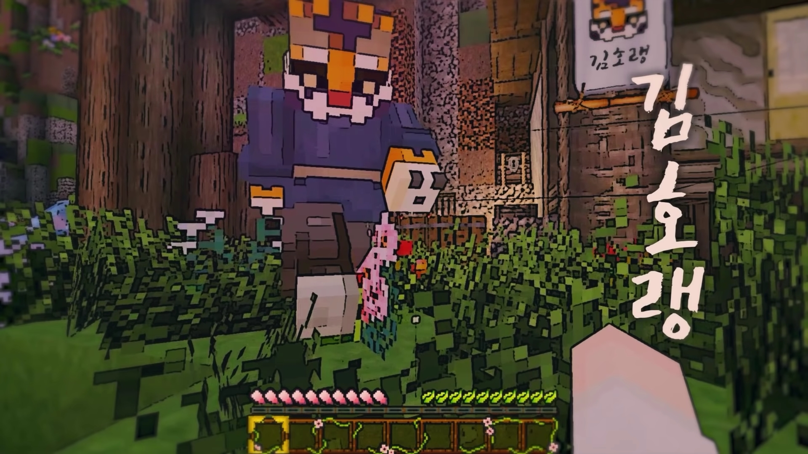
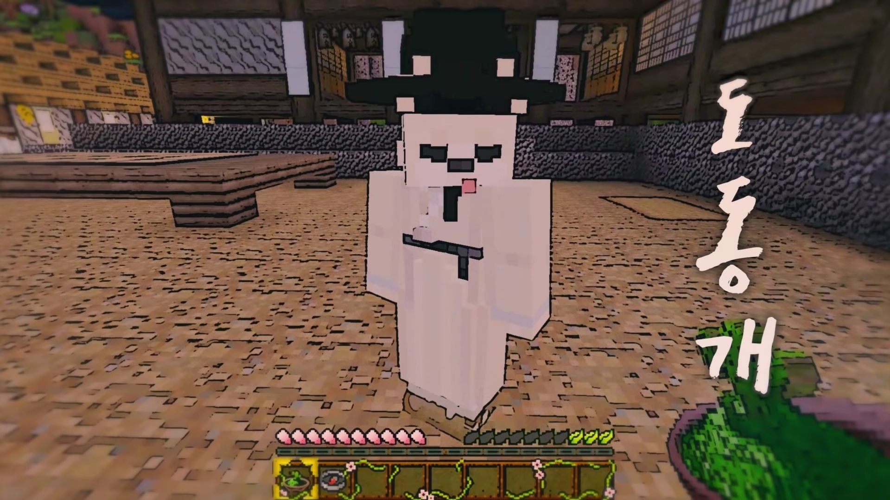
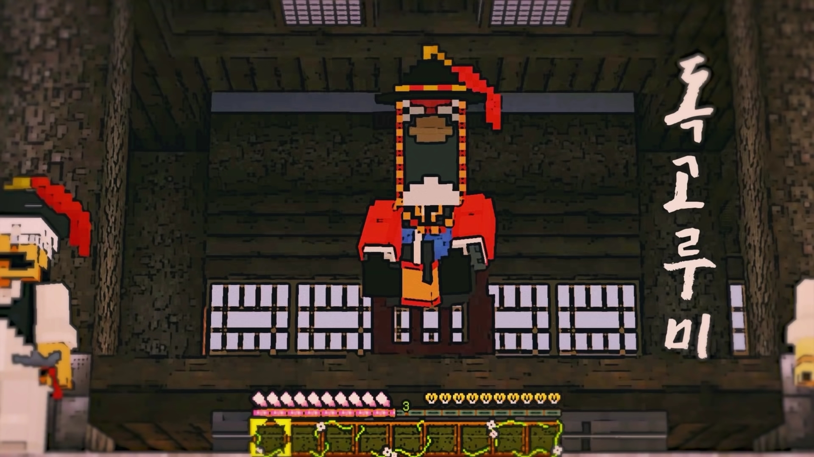
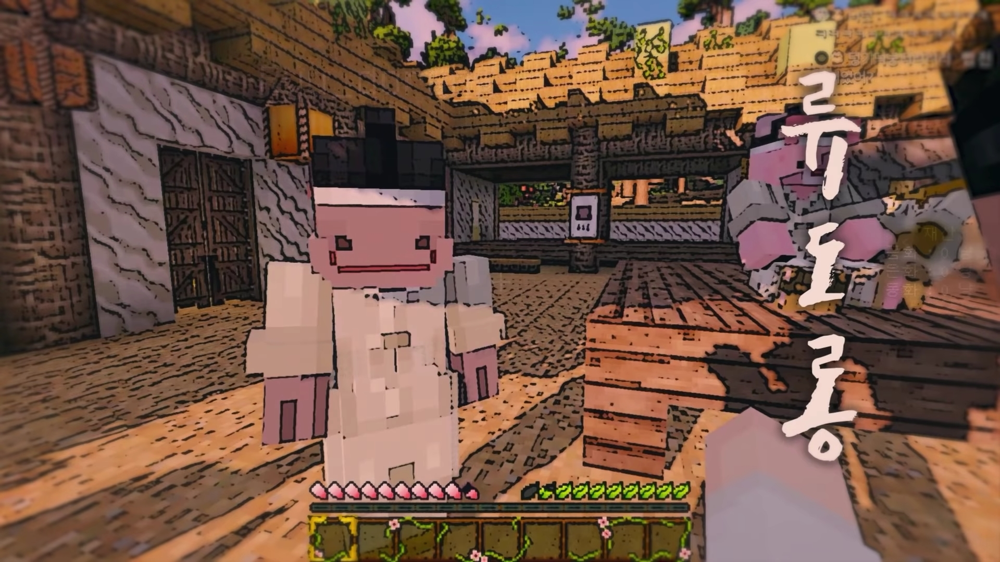
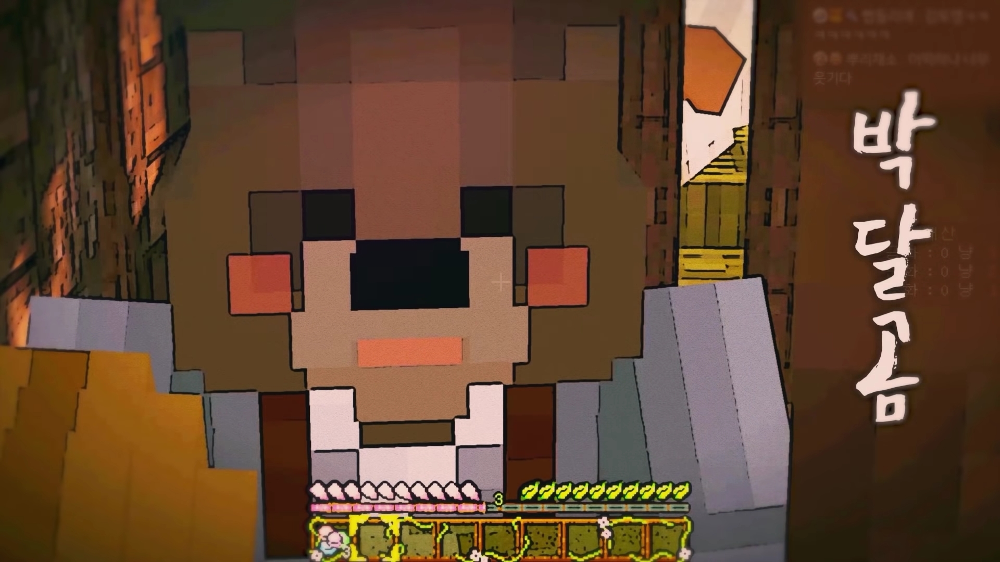
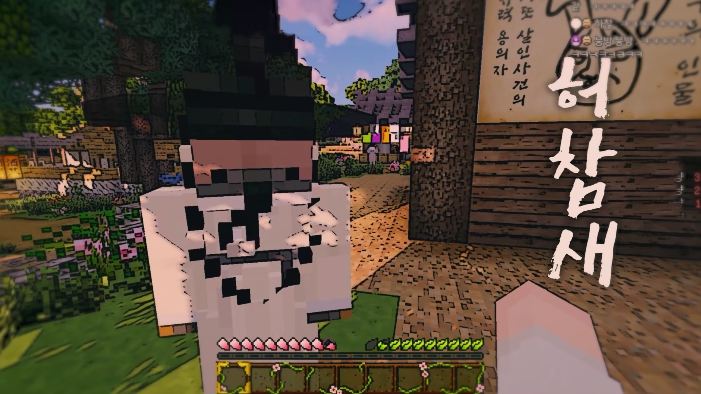

자빱의 마인크래프트 콘텐츠 | ||
| 우정리 노트 | 빱라임씬 | 토깽뎐 |
| 여걸세븐 | 자매꽃이 피었습니다 | 동개's 할로윈 파티 |
| 자빱상사 | 서리사막의 도둑들 | 계수떡집 오늘 하루 쉬어갑니다 |
| 양들이 잠드는 시간 | 마고묵시록 | 우정리 노트 2 |
토깽1 뎐(토끼전)은 유튜버 자빱이 기획·제작·진행한 시청자 참여형 마인크래프트 콘텐츠이다. 선풍적인 화제를 일으켰던 우정리 노트의 후속작이라 할 수 있다. 우정리 노트에 비교하면, 자빱을 제외한 모든 인물과 배경이 달라졌다. 이번 토끼전은 불의의 사고로 조선시대로 가게 된 후 누명을 뒤집어쓴 김자빱의 6일간 생존기와 사건의 진실을 밝혀내는 사극 추리물이다. 2020년 7월 11일부터 방송되었다. 우정리 노트 에필로그와 이어진다.
| 스트리머(플레이어) | 김자빱 |
| 스태프 | 김호랭, 도동개, 독고루미, 류도롱, 박달곰, 허참새 |
| 시청자 참여자 | 마우수 |
| NPC | 장호 |
기차를 타다가 조선시대 도화골로 오게된 김자빱. 마을 사람들은 그를 '김토깽'이라 부른다. 장호를 살해한 범인이 귀가 길다는 증언으로 인해 유력한 용의자로 지목 당했으며, 김토깽은 성격상 김자빱과 유사한 지점이 있었던 것으로 보인다. 특히 둘 다 가락을 잘 한다는 엄청난 능력을 보유 중이다.

도화골의 사냥꾼. 주막에 고기를 납품하고 있으며, 관웅사에서 미두코인을 할 때에도 호랭이 판매하는 고기를 이용해야 한다. 요리 솜씨가 대단해 토깽은 호랭의 요리가 수랏간 저리가라라고 기록하기도 했다. 처세에 능하다.

도화골의 의원. 이전에 노역을 하다가 크게 다친 김토깽을 치료한 바가 있으며, 인상 좋은 김토깽을 눈여겨 봤다가 그에게 몇가지 의원 일을 맡기곤 했다. 자빱의 가락을 무척 좋아하며, 토깽과는 사이가 우호적인 편이었다. 물론 토깽은 그리 생각하지 않았던 모양.

도화골의 현 사또. 장호가 살해된 후 사또로 부임했으며, 하대를 용납하진 않으나 토깽이 된 자빱에게도, 다른 주민에게도 너그러운지 체념한 건지 알 수 없는 태도로 잘못을 해도 기회를 여러 번 주는 모습을 보인다. 매일 시끄러운 도화골 생활에 골머리를 앓고 있다.

도화골의 주막 주인. 처음 도화골에서 정신을 차린 이후 주민들의 신분을 알 수 없어 애를 먹던 자빱이 천민이냐고 묻자 분노했다. 즉 평민이다. 주막을 열심히 운영하고 있으나 여러 동물들에게 돌아가며 음식이 털리곤 한다.

도화골의 관웅사 스님. 고기와 달디 단 음식을 사랑한다. 그다지 종교인다운 모습을 보이지는 않지만, 일단은 불교인인지라 대놓고 고기를 먹을 수는 없어 '미두코인'을 통해 몰래 고기를 사들이고 있다. 다른 사람 먹을 것을 중간에 호로록할 때마다 부처님의 뜻을 찾는다.

옆 집에 사는 선비. 과거에 합격하기 위해 열심히 시주한 적이 있지만 덕이 조금 부족하여(?) 낙방했다. 김토깽의 옆집에 살고 있으며, 김자빱이 오기 전의 토깽과는 서로를 골려먹곤 하는 앙숙이었다.
도화골에 새로 부임한 이방. 조금 갑작스럽게 차출되었는지 좁은 숙소를 배정받아 불만이 있다. 이방답게 사회생활에 능숙하지만, 처음 온 곳이라 하나하나 적응하고 있는 중이다.
2회차에 투입된 시청자 참여자 캐릭터.
조선시대로 신분제가 있다.